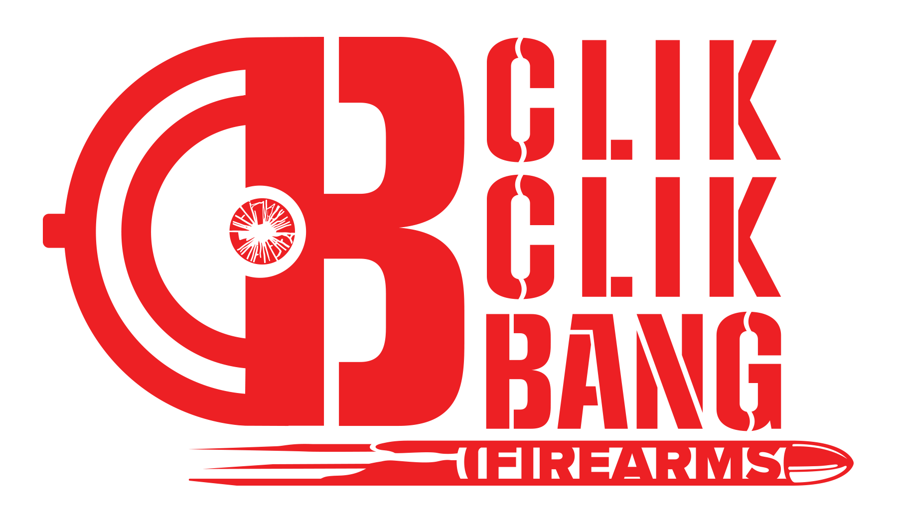
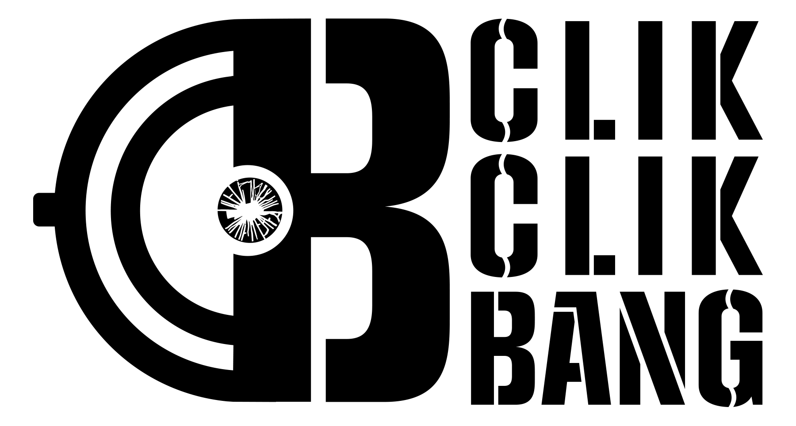
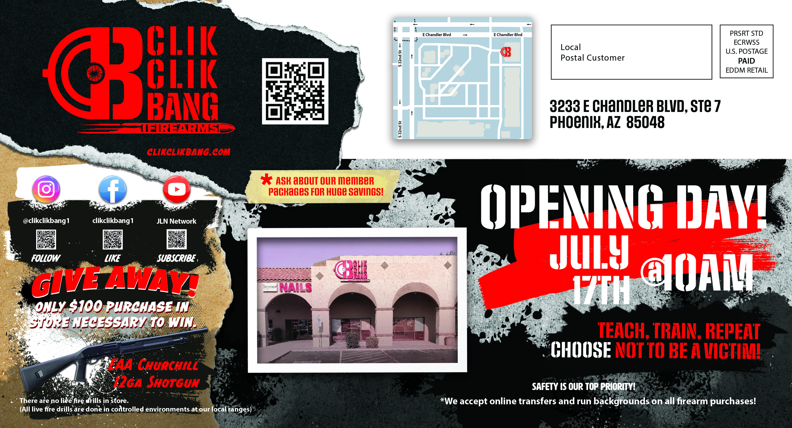
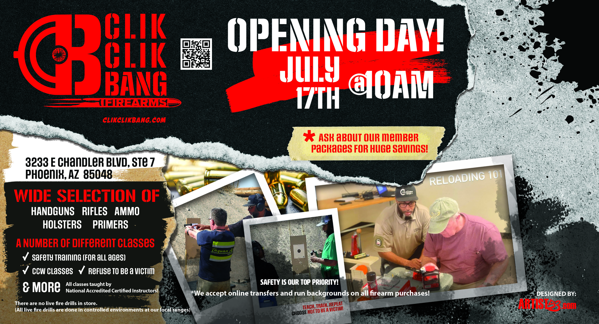

Logo Case Study
CLIK CLIK BANG
I had already worked with this client through Trinity Telecom. When he opened CLIK CLIK BANG, a Black owned gun store in Arizona, he came back to me for the new logo and the graphics the store needed.
Back To Logos
01 / The ClientClientCLIK CLIK BANG LocationArizona CategoryLogo Identity ServicesLogo And Marketing Design
A New Business
From Trinity Telecom To CLIK CLIK BANG
This was a long time client before CLIK CLIK BANG existed. I first worked with him through Trinity Telecom. When he moved into a completely different business in Arizona, he brought me back in to create the look for the new store.
02 / The Logo
Logo System
The CLIK CLIK BANG Logo
The CCB initials became the main symbol. The target sits in the center of the mark. The full version adds the CLIK CLIK BANG name and FIREARMS underneath. I kept the system in red, black and white so it could work on the building, online and in the store graphics.

Red Mark

Black Mark
03 / The Store

Real Use
The Logo On The Building
Seeing the logo installed was the point where it became more than a design file. It was now the face of the store.
Daytime Storefront
Storefront At Night
04 / Marketing
Store Graphics
Opening The Store
After the logo was finished, I kept working with the brand on the graphics needed to promote the opening, the store and its classes.

Opening Day
